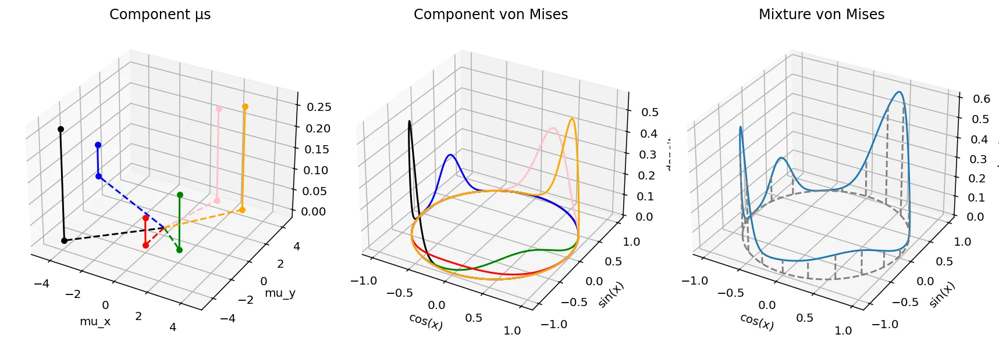
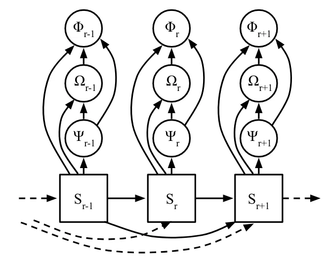

written by Eric J. Ma on 2024-06-08 | tags: protein structure autoregressive models neural networks von mises distribution protein backbone generation mixture models dihedral angles machine learning scientific research probability distribution
In this blog post, I do a deep dive into the paper 'The Continuous Language of Protein Structure' by Billera et al., which explores generating protein backbones using autoregressive models and the von Mises mixture model for sampling dihedral angles. This approach challenges the traditional discrete output of autoregressive models by producing continuous values, specifically for modeling protein structures. I discuss the technical and scientific premises, the role of the von Mises distribution, and the potential issue of non-identifiability in mixture models. How does this method open new avenues in protein structural modeling? Read on to find out.
I came across this paper, "The Continuous Language of Protein Structure" by Billera et. al., shared via Twitter thanks to Kevin Yang of Microsoft Research. This paper talks about generating protein sequence backbones through autoregressive generation. The technical premise of this paper, which I distinguish from the scientific premise, is that
autoregressive models do not inherently require their inputs and outputs to be discrete.
Indeed, most of the autoregressive neural network models we have seen generate discrete outputs, such as tokens from a tokenization scheme that maps letters, words, or word fragments to those tokens. However, if one stares hard enough at the structure of such models, they generate a multinomial distribution over tokens, from which we then sample the discrete tokens (categories).
So, strictly speaking, the outputs of an autoregressive language model are nothing more than continuous values that we "interpret" as being the probability distribution parameter values associated with this long multinomial probability vector, thus drawing a discrete categorical value from that distribution. If so, what's stopping us from producing the probability distribution parameters associated with other things that may also be continuous-valued? Why not produce the parameters of a probability distribution from which we sample continuous values?
What, then, does all of this have to do with the von Mises distribution and the neural von Mises mixture model?
This is related to the scientific premise of the paper, which is to generate protein backbones. Every protein structure comprises amino acids arranged in some 3-dimensional conformation, and between the backbone chain of $N$, $C_\alpha$, and $C$ atoms, there exists phi ($\phi$), psi ($\psi$), and omega ($\omega$) angles associated, which are also known as the torsion or dihedral angles. Below, I simplify an illustration from Justas Dauparas' excellent blog post:
All credit to Justas Dauparas for the original illustration, from which I created a simplification. In the illustration above:
While in the figure above, all of the angles are depicted on a single plane, it is possible to rotate each of those angles to move other atoms along the chain along the depth, width, and length axes of the 3-dimensional cartesian axes. Thus, a protein backbone chain can be numerically represented as a chain of dihedral angles.
As such, one way to generate a protein backbone is to sample each of $(\phi, \psi, \omega)$ from a distribution. The von Mises distribution is a natural distribution to sample from, as it is effectively used to model angular distributions! Moreover, because we may need extra flexibility in modelling $(\phi, \psi, \omega)$ we can draw angles from a mixture of von Mises distributions, which allows for multiple modes in its angular likelihood function. Here is what it looks like, alongside the code that generated the plot, which is a reproduction (with modifications) of what the paper's authors produce.
# 3D matplotlib plot that plots the von Mises distribution as a function of x. from jax.scipy.stats import vonmises import matplotlib.pyplot as plt x = np.linspace(-np.pi, np.pi, 1000) mu_xs = np.array([-4.0, +1.8, +0.0, -6.1, +1.1, +2.8]) mu_ys = np.array([-3.8, -1.5, -2.0, +3.0, +4.0, +3.8]) ws = np.array([0.4, 0.2, 0.1, 0.12, 0.34, 0.38]) ws = ws / np.sum(ws) print(ws) colors = ["black", "green", "red", "blue", "pink", "orange"] fig = plt.figure(figsize=(12, 4)) ax = fig.add_subplot(131, projection='3d') ax2 = fig.add_subplot(132, projection='3d') ax3 = fig.add_subplot(133, projection='3d') mixpdfs = [] for mu_x, mu_y, w, color in zip(mu_xs, mu_ys, ws, colors): ax.scatter(xs=mu_x, ys=mu_y, c=color) ax.scatter(xs=mu_x, ys=mu_y, zs=w, c=color) ax.plot([mu_x, mu_x], [mu_y, mu_y], [0, w], c=color) ax.plot([0, mu_x], [0, mu_y], ls='--', c=color) single_pdf = vonmises.pdf(x-np.arctan2(mu_y, mu_x), mu_x**2 + mu_y**2) * w ax2.plot(xs=np.cos(x), ys=np.sin(x), zs=single_pdf, c=color) mixpdfs.append(single_pdf) ax.set_xlabel("mu_x") ax.set_ylabel("mu_y") ax.set_xlim(-5, 5) ax.set_ylim(-5, 5) ax.set_title("Component µs") ax2.set_xlabel("cos(x)") ax2.set_ylabel("sin(x)") ax2.set_zlabel("density") ax2.set_title("Component von Mises") ax3.plot(xs=np.cos(x), ys=np.sin(x), zs=np.sum(np.vstack(mixpdfs), axis=0)) ax3.plot(xs=np.cos(x), ys=np.sin(x), zs=0, color="gray", ls="--") for xval, yval, height in zip(np.cos(x)[::50], np.sin(x)[::50], np.sum(np.vstack(mixpdfs), axis=0)[::50]): ax3.plot([xval, xval], [yval, yval], [0, height], color="gray", ls="--") ax3.set_xlabel("cos(x)") ax3.set_ylabel("sin(x)") ax3.set_zlabel("density") ax3.set_title("Mixture von Mises") plt.tight_layout()

The von Mises mixture model is thus parameterized by the following parameters, as illustrated above.
$w$, which is a vector of mixture weight components that sum to 1.0. The number of slots in the vector dictates the number of components present. On the left plot, this is reflected in the heights of each of the dots from the $(\mu_x,\mu_y)$ plane.
For each component, $\mu_x$ and $\mu_y$, two parameters that control both the von Mises distribution's location and spikiness. These are indicated by the location of the dots on the $(\mu_x, \mu_y)$ plane on the left plot.
The angle induced by the vector $(\mu_x, \mu_y)$ gives us the location on the unit circle where the highest density is. The magnitude, on the other hand, controls how spiky the probability density is. The greater the magnitude, the less the variance. These are indicated by the component von Mises distributions color paired to the $(\mu_x, \mu_y)$ dots on the left.
Together, the mixture distribution is shown on the right, and it is the summation of the individual probability density functions. (Vertical lines mark out how the mixture pdf is projected to the unit circle. )
According to the paper, each residue's angles are calculated from a factorized joint distribution, in which $\phi$ is sampled first, then $\omega$, then $\psi$. This implies the following graphical structure:

(Fig. 2 from the paper.)
I've modified the original figure provided by the authors to annotate clearly (for myself) where neural networks exist and what their outputs are.
Here is how information flows through the model. If we focus in on $S_{t+1}$ (the right blue box), we can first see the autoregressive nature of the beast.
In this way, the neural von Mises mixture model is as described above: neural networks producing the parameters of a von Mises mixture model, from which we sample dihedral angles.
One caveat that I can see to this paper relates to the fact that mixture models may suffer from non-identifiability when we try to decompose them into their mixture model components. What this means is that multiple combinations of $(w, \mu_x, \mu_y)$ can give rise to the same PDF. I didn't see the authors address this point in the paper. That said, in the grand scheme of things, I can see that non-identifiability may not be a practical issue that one would need to deal with, as the goal when generating protein backbone conformations is to sample angles from a plausible mixture PDF, not from the ground truth PDF.
Taken together, I thought this was a really cool application of mixture models, neural networks, and protein structural modeling. The core idea underneath the hood is that a neural network can be used to predict, or regress, the parameters of a probability distribution. In fact, whenever we do neural network regression with an MSE loss, we are implicitly predicting the parameter $\mu$ of a unit width Gaussian distribution. With the neural von Mises model, we are merely predicting more parameters at one shot!
@article{
ericmjl-2024-the-neural-von-mises-mixture-model,
author = {Eric J. Ma},
title = {The Neural Von Mises Mixture Model},
year = {2024},
month = {06},
day = {08},
howpublished = {\url{https://ericmjl.github.io}},
journal = {Eric J. Ma's Blog},
url = {https://ericmjl.github.io/blog/2024/6/8/the-neural-von-mises-mixture-model},
}
I send out a newsletter with tips and tools for data scientists. Come check it out at Substack.
If you would like to sponsor the coffee that goes into making my posts, please consider GitHub Sponsors!
Finally, I do free 30-minute GenAI strategy calls for teams that are looking to leverage GenAI for maximum impact. Consider booking a call on Calendly if you're interested!